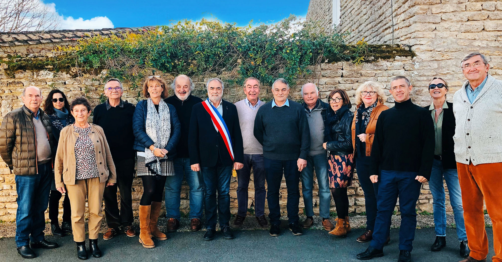

Les élus
Équipe Municipale
Le conseil municipal est l’assemblée délibérante élue de la commune, au suffrage universel direct. Aux Portes-en-Ré, 7 élu(e)s le constituent (3 femmes et 4 hommes).

Marcel AGERT
Le Maire Chevalier de la Légion d’Honneur Chevalier du Mérite Maritime
Marion DUPUY
1er Adjoint Première Adjointe au Maire chargé de l’urbanisme, l’environnement, la biodive
Marion DUPUY
1er Adjoint Première Adjointe au Maire chargé de l’urbanisme, l’environnement, la biodive
Jean-Marie CHAYRON
3ème Adjointe Deuxième Adjointe au Maire chargée des affaires scolaires et périscolaires
Anne-Marie DONÈS
Conseillère municipale déléguée Conseillère municipale déléguée à la vie locale, aux cérémonies, aux festivités, à la culture et à la politique participative
Georges JUNCA
Conseiller municipal Vice-Président de la commission défense des côtes, maritime, mouillages
Jean ORO
Conseillère municipale déléguée Chargée de la communication Déléguée communale auprès de la SPL Destination Ile de Ré